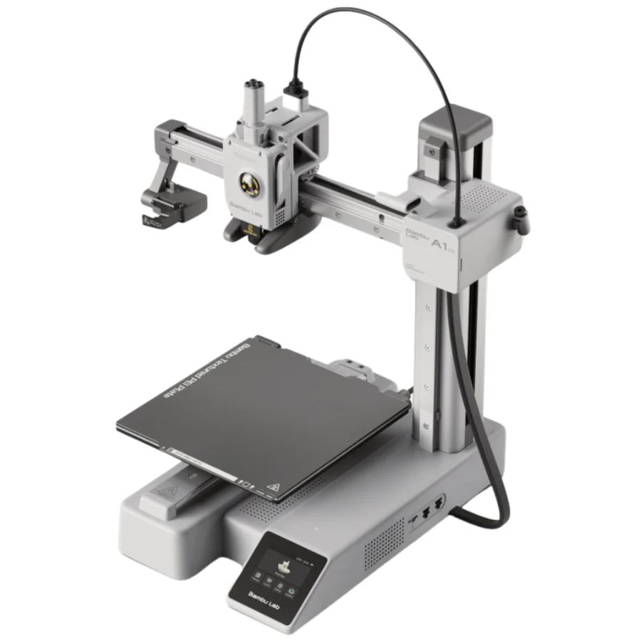

Mein Angebot
- Top-Druckqualität mit Bambu Lab A1 mini: Bis zu 0,1 mm Schichtgenauigkeit.
- Versand Österreich: Nur ca. 3 Werktage nach Fertigdruck.
- Persönlicher Design-Service: Aus Ihrer Skizze/Foto/Beschreibung erstelle ich die .STL-Datei zur Freigabe.
- Material: PLA in Schwarz, Blau, Rot, Weiß immer lagernd – andere Farben/Materialien auf Anfrage.